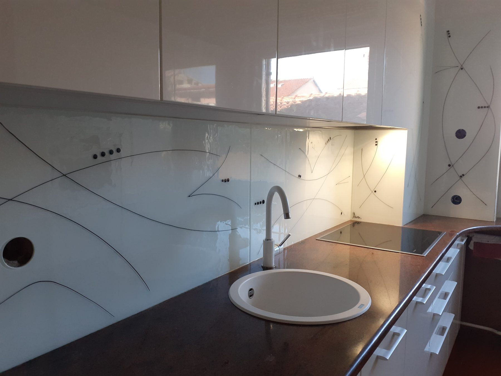
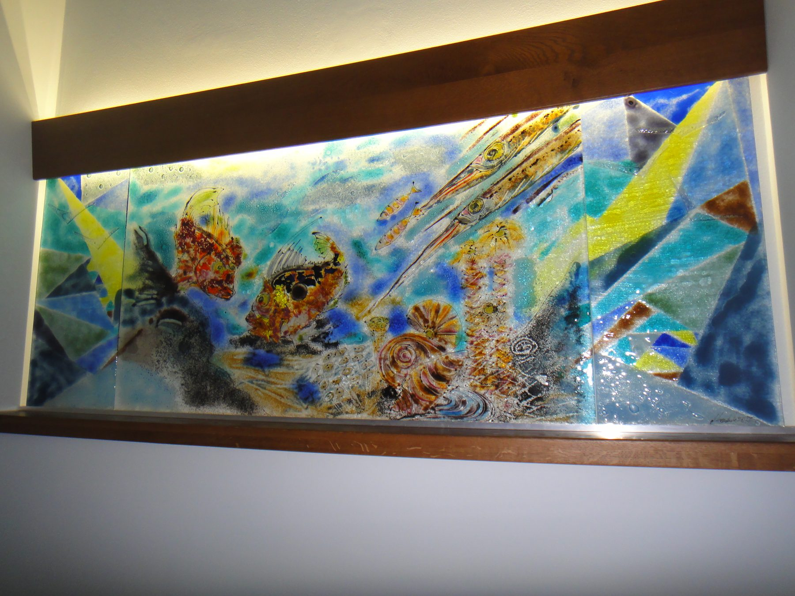
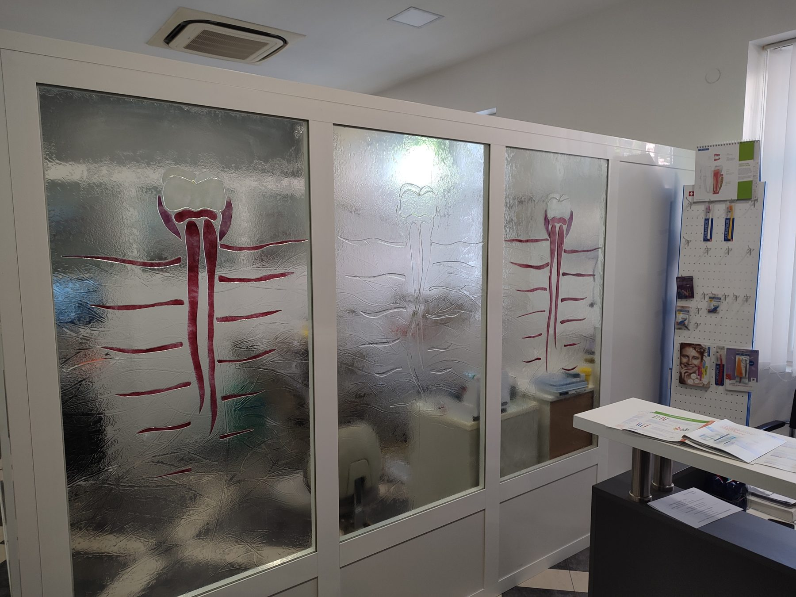
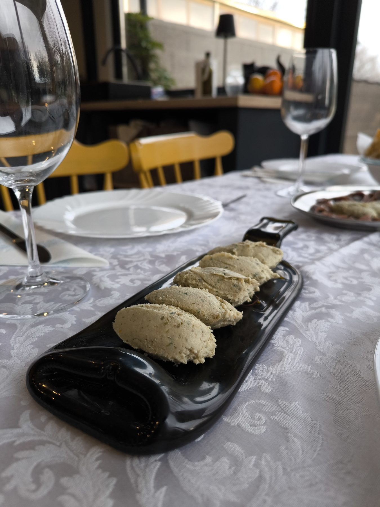

Svaka osoba, svaka obitelj i svaki dom ima svoju priču. Zadovoljstvo mi je otkriti je i ući u nju kroz suradnju s klijentima u njihovom ambijentu. Doživljavajući osobe u njihovom prostoru, rješenja za određeni design se sama nameću. Često je priča skrivena, a otkrije se upravo zajedničkim traženjem detalja koji bi tu priču zaokružili i nadogradili.
Izrada ogledala i dekorativnih elemenata, umjetničkih vrata, elemenata za kuhinje i catering, interijera i poslovnih prostora.
Zatraži konzultacijeKako suradnja funkcionira
- Početni upit
- Konzultacije
- Idejno rješenje
- Ponuda
- Izrada